Main menu
1 capture
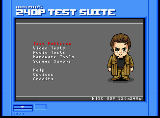
Top-level menu (8 entries)
main-menu · main/00-main-menu.png
Test patterns
2 captures
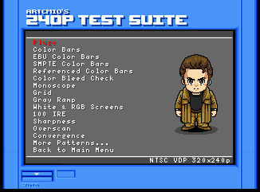
Test Patterns sub-menu
patterns-menu · patterns/00-patterns-menu.png
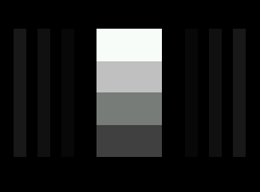
Pluge (first pattern)
patterns-pluge · patterns/01-patterns-pluge.png
Video tests
1 capture
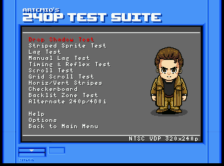
Video Tests sub-menu
video-menu · video/00-video-menu.png
Audio tests
1 capture
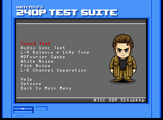
Audio Tests sub-menu
audio-menu · audio/00-audio-menu.png
Hardware tools
1 capture
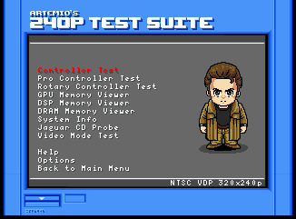
Hardware Tools sub-menu
hardware-menu · hardware/00-hardware-menu.png
EEPROM test
1 capture
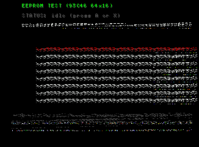
EEPROM Test grid (64 words, hex)
eeprom-grid · eeprom/00-eeprom-grid.png
Sprite stress test
1 capture
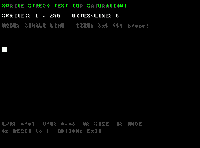
Sprite Stress Test default (1 sprite, 8x8, single-line)
sprite-stress-default · sprite-stress/00-sprite-stress-default.png
Y/C delay pattern
1 capture
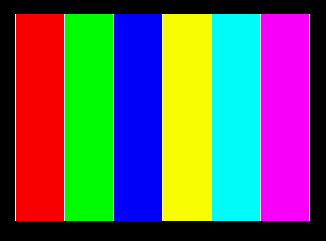
Y/C Delay (RGB+CMY strips with 1px white dividers)
ycdelay-strips · ycdelay/00-ycdelay-strips.png
Diagonal / clock pattern
1 capture
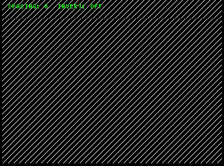
Diagonal / Clock pattern (8 px spacing, default invert off)
diagonal-default · diagonal/00-diagonal-default.png
Vertical scroll test
1 capture
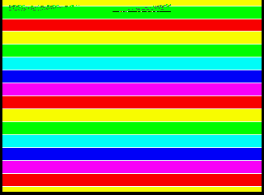
Vertical Scroll Test (default speed 1, dir DN)
vertscroll-running · vertscroll/00-vertscroll-running.png
White noise test
1 capture
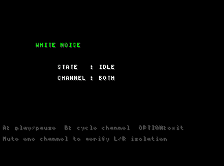
White Noise Test (idle, ready to play)
white-noise-idle · white-noise/00-white-noise-idle.png
Pink noise test
1 capture
L/R channel separation
1 capture
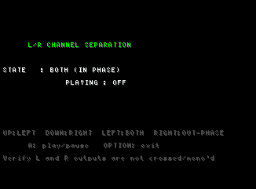
Channel Separation (BOTH in-phase, OFF)
channel-sep-default · channel-sep/00-channel-sep-default.png
Screen savers
1 capture
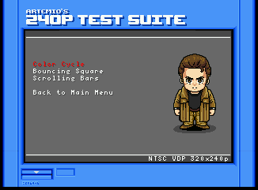
Screen Savers sub-menu
screensavers-menu · screensavers/00-screensavers-menu.png
Help
1 capture
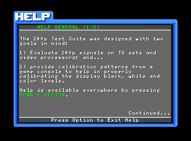
Help screen
help-menu · help/00-help-menu.png
Options
1 capture
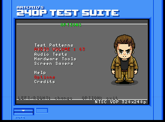
Options screen
options-menu · options/00-options-menu.png
Credits
1 capture
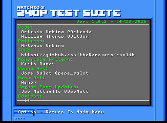
Credits
credits-screen · credits/00-credits-screen.png